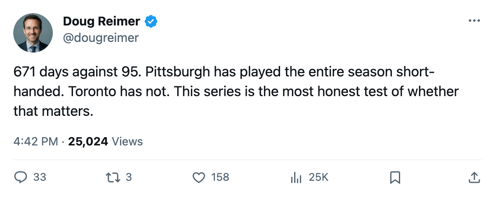
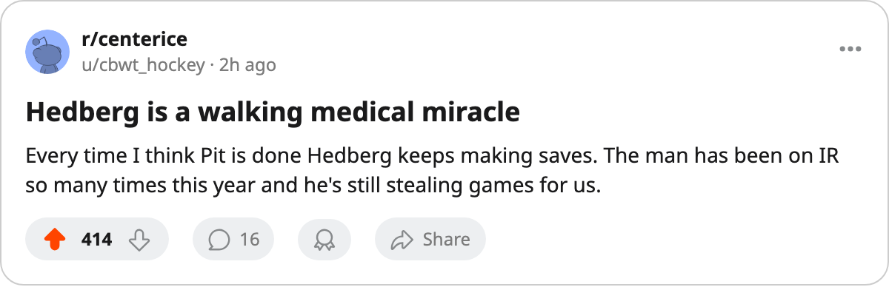

671 Days Against 95: The Two Most Unequal Matchups in the East's Second Round
Pittsburgh lost more time to injury than any club in the league. Toronto lost the least. They open a series tomorrow.
 Doug ReimerAnalytics editor, ex-video coach · The Slot Report
Doug ReimerAnalytics editor, ex-video coach · The Slot Report
Pittsburgh's 61 designated injury spells cost it 671 days. Toronto's 71 spells cost it 95. The  Pittsburgh Penguins
Pittsburgh Penguins  Toronto Maple Leafs series that opens tomorrow at Toronto is the widest gap in days-lost between any two clubs in these playoffs: 576 days.
Toronto Maple Leafs series that opens tomorrow at Toronto is the widest gap in days-lost between any two clubs in these playoffs: 576 days.
The method is the league's own injury ledger. A spell is a designated absence with a body part attached. Days-lost is the total across all spells for a club over the 82-game season. I do not weight by role or by position. The number is the number.
The gap that built a 7th seed
Pittsburgh Penguins finished with 85 points on a payroll of $44.95M. It carries 671 days lost, the most in the league by 49 over Tampa Bay's 622. Its goaltender  Johan Hedberg87 appears on the ledger 5 times.
Johan Hedberg87 appears on the ledger 5 times.  Mario Lemieux88 appears 5 times. Eric Meloche77, who has 6 points in 6 playoff games, was on the shelf once.
Mario Lemieux88 appears 5 times. Eric Meloche77, who has 6 points in 6 playoff games, was on the shelf once.
Toronto Maple Leafs finished with 133 points on a payroll of $60.04M. It logged 71 spells, the most designations in the league, but only 95 days lost. The Leafs collected more absences than anyone; they were simply shorter. A one- or two-day absence for a scratch, a day-to-day knock on a healthy scratch, and the roster re-forms the next morning.
Multi-week absences for Lemieux, stretches for Hedberg who still played 63 regular-season games, and 61 separate designations mean the bench was in constant rotation. The survivors accumulated the ice time. Meloche scored 88 points on $400,000 in a season when he missed time once.
| club | spells | days lost |
|---|---|---|
| PIT | 61 | 671 |
| TOR | 71 | 95 |
The Round 1 precedent
Pittsburgh already beat the healthiest club in this bracket once.  New Jersey Devils logged 55 spells and 122 days, the second-fewest among all 16 playoff clubs. Pittsburgh Penguins beat it in 6 games. The gap there was 549 days. It is wider now: 576.
New Jersey Devils logged 55 spells and 122 days, the second-fewest among all 16 playoff clubs. Pittsburgh Penguins beat it in 6 games. The gap there was 549 days. It is wider now: 576.
The  Tampa Bay Lightning
Tampa Bay Lightning  Washington Capitals series on Saturday has the second-widest gap among the four second-round matchups: 622 days for Tampa Bay Lightning against 350 for Washington Capitals, a difference of 272. The
Washington Capitals series on Saturday has the second-widest gap among the four second-round matchups: 622 days for Tampa Bay Lightning against 350 for Washington Capitals, a difference of 272. The  Mighty Ducks of Anaheim
Mighty Ducks of Anaheim  Edmonton Oilers pairing sits at 173. The
Edmonton Oilers pairing sits at 173. The  Dallas Stars
Dallas Stars  Phoenix Coyotes matchup is 106, and the away club in that series is the one that lost more time.
Phoenix Coyotes matchup is 106, and the away club in that series is the one that lost more time.
| club | days lost | seed | home/away in R2 |
|---|---|---|---|
| TOR | 95 | 1 | Home |
| DAL | 279 | 2 | Home |
| EDM | 302 | 5 | Home |
| WSH | 350 | 4 | Away |
| PHX | 385 | 8 | Away |
| ANA | 475 | 6 | Away |
| TB | 622 | 3 | Home |
| PIT | 671 | 7 | Away |
The mis-allocation angle
My March piece showed that the spread in production among the league's top scorers is twice what the spread in ice time explains. Pittsburgh has no choice but to allocate minutes to whoever is available. That produced a 7th seed and a first-round upset. Toronto never had to make that choice. Its 95 lost days meant its top six played together for virtually the entire season.
The series is 7 games against the best roster in hockey. Whether 61 spells and 671 days built a habit that holds at that depth, or whether the health advantage compounds over a short series, is what comes out tomorrow.

